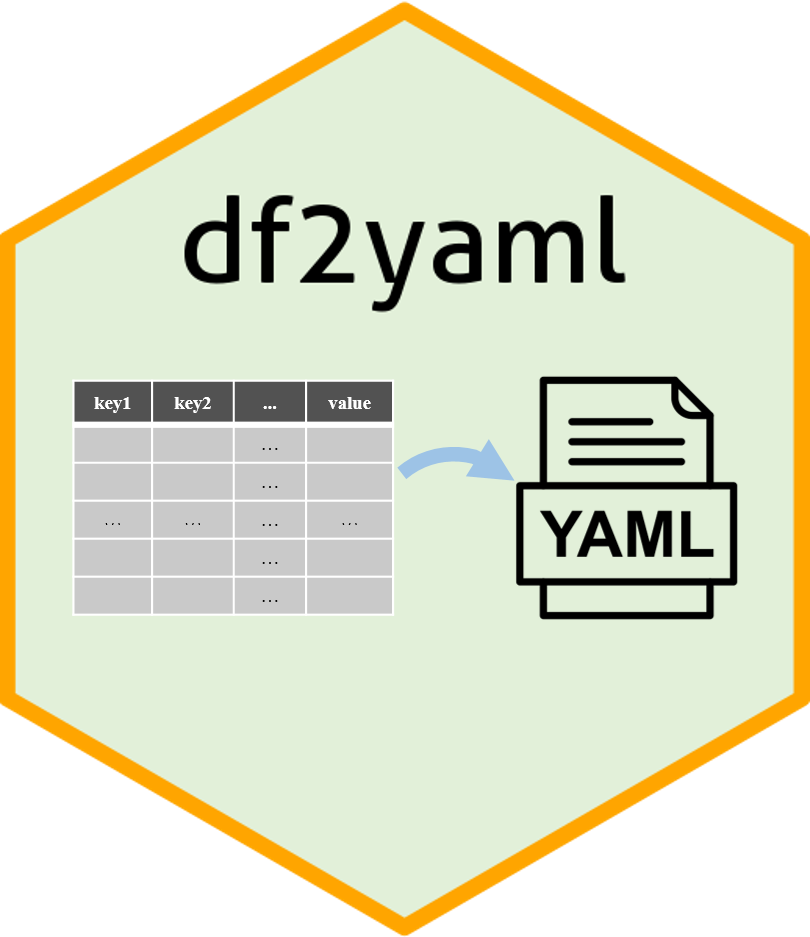

The goal of df2yaml is simplify the process of converting dataframe to YAML. The dataframe with multiple key columns and one value column (this column can also contain key-value pair(s)) will be converted to multi-level hierarchy.
Installation
You can install the released version of df2yaml from CRAN with:
install.packages("df2yaml")Usage
# library
library(df2yaml)
#> Warning: replacing previous import 'lifecycle::last_warnings' by
#> 'rlang::last_warnings' when loading 'tibble'
#> Warning: replacing previous import 'lifecycle::last_warnings' by
#> 'rlang::last_warnings' when loading 'pillar'
# load test file
test_file <- system.file("extdata", "df2yaml_l3.txt", package = "df2yaml")
test_data = read.table(file = test_file, header = T, sep = "\t")
head(test_data)
#> paras subcmd values
#> 1 picard insert_size MINIMUM_PCT: 0.5
#> 2 picard markdup CREATE_INDEX: true; VALIDATION_STRINGENCY: SILENT
#> 3 preseq -r 100 -seg_len 100000000
#> 4 qualimap --java-mem-size=20G -outformat HTML
#> 5 rseqc mapq: 30; percentile-floor: 5; percentile-step: 5
# output yaml string
yaml_res = df2yaml(df = test_data, key_col = c("paras", "subcmd"), val_col = "values")
cat(yaml_res)
#> preseq: -r 100 -seg_len 100000000
#> qualimap: --java-mem-size=20G -outformat HTML
#> rseqc:
#> mapq: 30
#> percentile-floor: 5
#> percentile-step: 5
#> picard:
#> insert_size:
#> MINIMUM_PCT: 0.5
#> markdup:
#> CREATE_INDEX: true
#> VALIDATION_STRINGENCY: SILENTCode of Conduct
Please note that the df2yaml project is released with a Contributor Code of Conduct. By contributing to this project, you agree to abide by its terms.